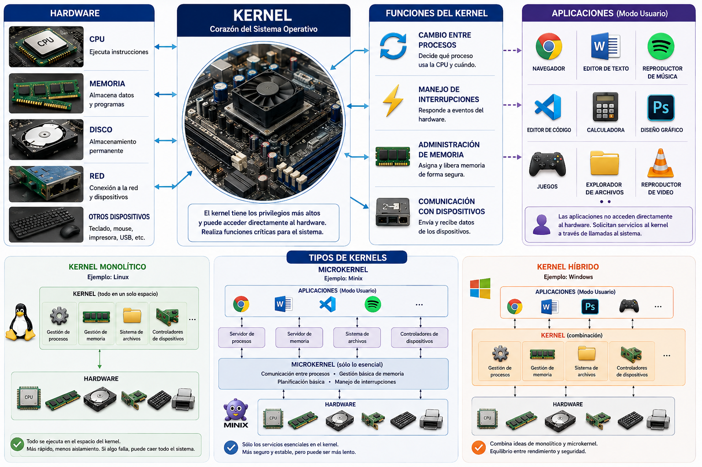
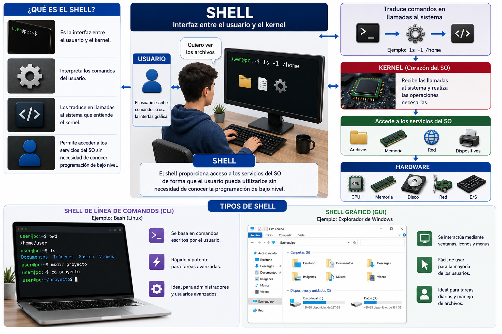
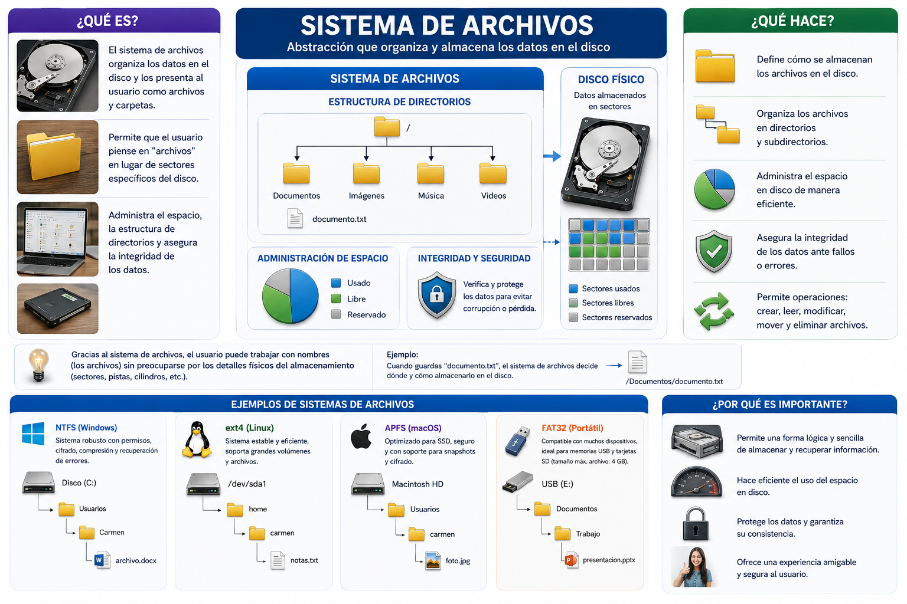
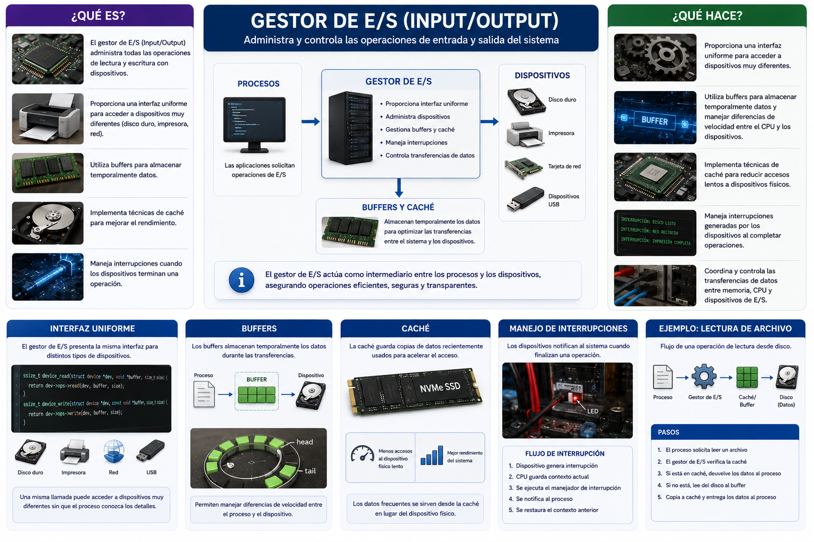

SISTEMAS OPERATIVOS II
ERA 1
Ingeniería de Software
Tema 1: Definición de Sistema Operativo
01📖 Definición
Un sistema operativo (SO) es un programa de software de bajo nivel que actúa como intermediario entre el usuario y el hardware de la computadora, administrando y coordinando el uso de todos los recursos disponibles del sistema. Es un conjunto integrado de programas que controla la ejecución de otros programas, administra la memoria, gestiona dispositivos periféricos, proporciona servicios esenciales a las aplicaciones, y asegura que múltiples tareas puedan ejecutarse de manera segura y eficiente en el mismo hardware. El sistema operativo proporciona una interfaz de usuario (línea de comandos, interfaz gráfica o ambas) a través de la cual el usuario puede interactuar con la computadora sin necesidad de conocer los detalles técnicos del hardware subyacente.
Ventajas de los Sistemas Operativos
- Abstracción del hardware: Los programas no necesitan conocer detalles del hardware específico.
- Administración eficiente de recursos: Maximiza el uso del procesador, memoria y otros recursos.
- Multitarea: Permite que múltiples programas se ejecuten simultáneamente.
- Protección y seguridad: Aísla procesos y protege datos críticos.
- Portabilidad: Los programas pueden ejecutarse en diferentes dispositivos sin modificación.
- Interfaz amigable: Proporciona interfaces gráficas e intuitivas para el usuario.
Desventajas de los Sistemas Operativos
- Complejidad: Los SO modernos son extremadamente complejos, con millones de líneas de código.
- Sobrecarga (Overhead): El SO consume recursos del sistema para sus operaciones internas.
- Vulnerabilidades de seguridad: La complejidad también introduce posibles vulnerabilidades de seguridad.
- Latencia: Las abstracciones pueden introducir latencia en operaciones críticas.
- Compatibilidad: Diferentes SO pueden requerir recompilación o adaptación de código.
Importancia del Sistema Operativo
La importancia del sistema operativo no puede ser subestimada. Sin él, utilizar una computadora sería una tarea extremadamente compleja que requeriría conocimiento profundo de electrónica y programación de bajo nivel. El SO es lo que permite que millones de usuarios sin conocimiento técnico puedan usar computadoras productivamente todos los días. Además, en la era de la computación en nube, los centros de datos y la computación distribuida, los SO sofisticados son lo que permite ejecutar cientos de aplicaciones en el mismo hardware de manera eficiente y segura. Para los ingenieros de software, entender cómo funcionan los SO es crucial para escribir aplicaciones eficientes, resolver problemas de rendimiento, y trabajar en áreas como computación en tiempo real, sistemas embebidos y computación de alto rendimiento.
🔧 Componentes Principales
El kernel es el corazón del sistema operativo. Es el programa con los privilegios más altos que puede acceder directamente al hardware. El kernel realiza funciones críticas como cambiar entre procesos, manejar interrupciones, administrar memoria y comunicarse con dispositivos. Existen diferentes tipos de kernels: monolíticos (como en Linux), microkernel (como en Minix), y híbridos (como en Windows).

El shell es la interfaz entre el usuario y el kernel. Interpreta los comandos del usuario y los traduce en llamadas al sistema. Puede ser una interfaz de línea de comandos (CLI) como Bash en Linux, o una interfaz gráfica (GUI) como el Explorador de Windows. El shell proporciona acceso a los servicios del SO de forma que el usuario pueda utilizarlos sin necesidad de conocer la programación de bajo nivel.

El sistema de archivos es la abstracción que el SO proporciona para organizar datos en el disco. Define cómo se almacenan archivos, cómo se organizan en directorios, cómo se administra el espacio en disco, y cómo se asegura la integridad de los datos. Ejemplos incluyen NTFS (Windows), ext4 (Linux), APFS (macOS), y FAT32 (portátil). El sistema de archivos es lo que permite que el usuario piense en "archivos" en lugar de sectores específicos del disco.

El gestor de dispositivos administra la comunicación con dispositivos periféricos (impresoras, teclados, pantallas, discos duros, adaptadores de red). Utiliza drivers (controladores) que son programas específicos que saben cómo comunicarse con cada dispositivo. El SO abstrae los detalles específicos de cada dispositivo, proporcionando una interfaz uniforme a las aplicaciones.
El gestor de memoria administra la memoria RAM disponible, asignando segmentos a cada proceso y protegiendo que unos no sobrescriban la memoria de otros. Implementa técnicas como paginación y segmentación para permitir que programas tengan la ilusión de tener acceso a más memoria de la disponible (memoria virtual). También gestiona la caché para mejorar el rendimiento al mantener datos frecuentemente usados más accesibles.
El gestor de procesos es responsable de crear, ejecutar, suspender y terminar procesos. Mantiene información sobre cada proceso en una estructura llamada Bloque de Control de Procesos (PCB). Implementa algoritmos de planificación para decidir qué proceso debe ejecutarse en cada momento. Maneja cambios de contexto, que es el proceso de salvar el estado de un proceso y restaurar el de otro.
El gestor de E/S (Input/Output) administra todas las operaciones de lectura y escritura con dispositivos. Proporciona una interfaz uniforme para acceder a dispositivos muy diferentes (disco duro, impresora, red). Utiliza buffers para almacenar temporalmente datos, implementa técnicas de caché, y maneja interrupciones cuando los dispositivos terminan una operación.

🏗️ Estructuras de Sistemas Operativos
La estructura de un sistema operativo define cómo se organizan sus componentes, cómo se comunican entre sí y qué responsabilidades permanecen dentro o fuera del núcleo. Esta organización influye directamente en el rendimiento, la seguridad, la estabilidad y la facilidad de mantenimiento del sistema.
1. Estructura Monolítica
En una estructura monolítica, los principales servicios del sistema operativo se ejecutan dentro del espacio del kernel. La gestión de procesos, memoria, sistemas de archivos, controladores y otras funciones trabajan en un mismo espacio privilegiado y pueden comunicarse directamente.
✅ Ventajas
- Alto rendimiento debido a la comunicación directa entre componentes.
- Menor sobrecarga en la comunicación entre servicios.
- Acceso eficiente a los recursos del sistema.
⚠️ Desventajas
- Un fallo en un componente del kernel puede comprometer todo el sistema.
- Mayor dificultad para modificar o mantener componentes altamente acoplados.
- Una gran cantidad de código se ejecuta con privilegios elevados.
2. Estructura de Capas
El sistema operativo se organiza en niveles jerárquicos. Cada capa utiliza los servicios proporcionados por la capa inferior y ofrece servicios a la capa superior. En términos generales, el hardware se encuentra en la capa inferior y las aplicaciones o la interfaz de usuario en las capas superiores.
✅ Ventajas
- Separación clara de responsabilidades.
- Facilita el diseño, las pruebas y el mantenimiento.
- Permite analizar cada nivel de manera independiente.
⚠️ Desventajas
- Una solicitud puede tener que atravesar varias capas.
- Puede introducir sobrecarga en determinadas operaciones.
- No siempre es sencillo determinar en qué capa debe ubicarse una función.
3. Estructura Microkernel
El microkernel mantiene dentro del núcleo únicamente los mecanismos esenciales, como la comunicación entre procesos, la planificación básica y determinadas funciones de gestión de memoria. Servicios como controladores, sistemas de archivos y servicios de red pueden ejecutarse fuera del kernel, generalmente en espacio de usuario.
✅ Ventajas
- Mayor aislamiento entre los diferentes servicios.
- Un fallo en un servicio puede tener un impacto más limitado.
- Facilita la extensión, mantenimiento y evolución del sistema.
- Reduce la cantidad de código que se ejecuta con privilegios de kernel.
⚠️ Desventajas
- La comunicación entre servicios puede generar sobrecarga.
- Requiere mecanismos eficientes de comunicación entre procesos.
- Su diseño e implementación pueden ser más complejos.
4. Estructura Híbrida
La estructura híbrida combina características de los modelos monolítico y microkernel. Mantiene determinados servicios dentro del espacio del kernel para obtener un buen rendimiento, mientras utiliza mecanismos de modularidad y separación para otros componentes.
✅ Ventajas
- Busca equilibrar rendimiento, modularidad y estabilidad.
- Permite mantener servicios críticos dentro del kernel.
- Puede incorporar mecanismos de modularidad y aislamiento.
⚠️ Desventajas
- La arquitectura puede ser más compleja de analizar.
- No proporciona necesariamente el mismo nivel de aislamiento que un microkernel puro.
- Algunos componentes continúan ejecutándose con privilegios elevados.
🔎 Comparación general
📊 Clasificación de Sistemas Operativos
La clasificación de los sistemas operativos consiste en agruparlos según sus características y la forma en que funcionan. Para clasificarlos, se tienen en cuenta aspectos como el número de usuarios que pueden utilizarlos, la cantidad de procesadores que pueden administrar, la forma en que ejecutan las tareas, la manera en que el usuario interactúa con ellos y cómo distribuyen los recursos del sistema.
👥 1. Por número de usuarios
Monousuario
Es un sistema operativo diseñado para atender principalmente a un único usuario durante una sesión de trabajo. La gestión de los recursos se concentra en las aplicaciones utilizadas por ese usuario.
Aunque puede ejecutar varios programas al mismo tiempo, el sistema no está orientado a administrar de manera simultánea diferentes usuarios con sesiones independientes.
Multiusuario
Permite que varios usuarios accedan al sistema y utilicen sus recursos, incluso de manera simultánea. Cada usuario puede disponer de sus propios archivos, procesos, configuraciones y permisos.
Para garantizar la seguridad, el sistema debe controlar la autenticación, autorización y aislamiento de los recursos, evitando accesos no permitidos entre usuarios.
🧠 2. Por número de procesadores
Monoprocesador
Es un sistema en el que el sistema operativo administra una única unidad de procesamiento. Los procesos compiten por utilizar ese procesador y el planificador determina cuál debe ejecutarse en cada momento.
Cuando existen varios procesos preparados para ejecutarse, el sistema puede alternar rápidamente entre ellos, generando la sensación de ejecución simultánea aunque solo exista un procesador disponible.
Multiprocesador
Permite que el sistema operativo administre dos o más unidades de procesamiento. Esto posibilita que diferentes procesos o hilos puedan ejecutarse realmente de manera simultánea.
El sistema debe coordinar la asignación de trabajo, sincronizar los procesos y administrar correctamente los recursos compartidos entre los procesadores.
⚙️ 3. Por tipo de ejecución
Monoprogramación
Permite mantener un solo programa como unidad principal de ejecución. El programa dispone de gran parte de los recursos del sistema mientras se encuentra activo.
Su diseño es sencillo, pero presenta una utilización limitada de los recursos, especialmente cuando el programa debe esperar operaciones de entrada y salida.
Multiprogramación
Permite mantener varios programas en memoria y alternar su ejecución para aprovechar mejor los recursos del sistema. Mientras un proceso espera una operación de entrada/salida, otro puede utilizar el procesador.
Este enfoque aumenta el nivel de utilización de la CPU y requiere mecanismos de planificación, protección de memoria y administración de procesos.
🖥️ 4. Por interacción con el usuario
Procesamiento por lotes
Los trabajos se agrupan y se entregan al sistema para ser procesados de manera automática. Durante la ejecución, el usuario no necesita intervenir continuamente.
El sistema operativo organiza y ejecuta los trabajos siguiendo una planificación determinada, lo que resulta apropiado para tareas repetitivas y grandes volúmenes de información.
Interactivo
Está diseñado para permitir una interacción directa entre el usuario y el sistema. Las acciones realizadas por el usuario generan respuestas que deben producirse en tiempos adecuados para mantener una experiencia fluida.
El sistema operativo administra los recursos para que múltiples aplicaciones puedan responder mientras el usuario trabaja.
Tiempo real
Está diseñado para responder a eventos dentro de restricciones temporales previamente establecidas. La importancia no está únicamente en producir una respuesta correcta, sino en producirla dentro del tiempo requerido.
Se utiliza especialmente cuando el incumplimiento de una restricción temporal puede afectar el funcionamiento o la seguridad del sistema.
🌐 5. Por distribución de los recursos
Centralizado
La gestión y procesamiento de los recursos se concentra principalmente en un único computador. El sistema operativo administra localmente el procesador, la memoria, almacenamiento y dispositivos conectados.
Este modelo simplifica la administración, ya que los recursos se encuentran bajo el control de una única instancia del sistema.
Distribuido
Los recursos y procesos se encuentran repartidos entre diferentes computadores conectados mediante una red. El sistema debe coordinar las actividades de las diferentes máquinas para proporcionar servicios de manera integrada.
Este enfoque permite aprovechar recursos distribuidos, mejorar la disponibilidad y escalar determinadas aplicaciones, aunque introduce desafíos relacionados con comunicación, sincronización y tolerancia a fallos.
❓ Preguntas de Repaso
- ¿Cuál es la diferencia fundamental entre el kernel y las aplicaciones de usuario en términos de privilegios?
- ¿Por qué es importante la multiprogramación en los sistemas operativos modernos?
- ¿Cuáles son las ventajas y desventajas de una arquitectura de kernel monolítico comparada con una de microkernel?
- ¿Cómo logra un SO con un procesador ejecutar múltiples procesos "simultáneamente"?
- ¿Qué diferencias existen entre un SO monousuario y uno multiusuario en términos de mecanismos de seguridad?
- ¿Por qué es importante que los diferentes subsistemas del SO estén claramente separados en la arquitectura?
- ¿Cómo la abstracción proporcionada por el SO facilita la programación de aplicaciones?
🎯 Mini Quiz - Tema 1
Tema 2: Multiprocesador y Computación Distribuida
02📖 ¿Qué es un sistema multiprocesador?
Un sistema multiprocesador es un sistema de computación que cuenta con dos o más procesadores o núcleos capaces de trabajar de manera simultánea.
Estos procesadores permiten que diferentes tareas puedan ejecutarse al mismo tiempo, aprovechando mejor los recursos del computador.
A diferencia de un sistema con un solo procesador, donde las tareas deben compartir el tiempo de procesamiento, un sistema multiprocesador puede realizar ejecución paralela real.
⚙️ ¿Cómo funciona un sistema multiprocesador?

🌐 ¿Qué es la computación distribuida?
La computación distribuida es un modelo en el que varios computadores independientes trabajan juntos para realizar tareas o proporcionar un servicio.
Cada computador tiene sus propios recursos, como procesador, memoria, almacenamiento y sistema operativo.
Estos computadores se comunican mediante una red para intercambiar información y coordinar el trabajo.
De esta manera, un trabajo grande puede dividirse entre diferentes máquinas, permitiendo aprovechar los recursos de todo el sistema.
⚙️ ¿Cómo funciona la computación distribuida?
🔄 Diferencias entre Multiprocesador y Computación Distribuida
| Aspecto | Multiprocesador | Computación distribuida |
|---|---|---|
| Máquinas | Una sola máquina | Varias máquinas independientes |
| Procesadores | Varios procesadores o núcleos | Cada máquina tiene sus propios procesadores |
| Memoria | Generalmente compartida | Cada máquina tiene su propia memoria |
| Comunicación | Dentro de la misma máquina | A través de una red |
| Sistema operativo | Un sistema operativo controla la máquina | Cada máquina tiene su propio sistema operativo |
| Escalabilidad | Se agregan recursos a la máquina | Se pueden agregar más máquinas |
🏗️ Arquitecturas de Multiprocesadores
Los sistemas multiprocesador pueden organizar la relación entre sus procesadores y la memoria de diferentes maneras. Dos arquitecturas importantes son UMA y NUMA.
UMA — Uniform Memory Access
En una arquitectura UMA, todos los procesadores comparten la misma memoria principal y tienen un tiempo de acceso similar a cualquier parte de esa memoria.
Esto hace que la organización sea relativamente sencilla, porque todos los procesadores pueden acceder a la memoria compartida de manera uniforme.
NUMA — Non-Uniform Memory Access
En una arquitectura NUMA, la memoria se encuentra distribuida entre diferentes nodos o grupos de procesadores.
Cada procesador tiene una memoria cercana que puede consultar rápidamente. También puede acceder a la memoria de otros nodos, pero ese acceso puede tardar más.
Esta arquitectura permite construir sistemas con muchos procesadores y grandes cantidades de memoria, aunque su organización es más compleja.
✅ Ventajas
🚀 Mayor rendimiento
Varias tareas pueden ejecutarse al mismo tiempo, aprovechando diferentes procesadores o núcleos.
⚡ Paralelismo
Una tarea puede dividirse en partes que se ejecutan simultáneamente cuando el programa lo permite.
💻 Mejor respuesta
Una tarea pesada puede ejecutarse mientras otros procesos continúan trabajando.
📈 Mayor capacidad
Permite atender más tareas y usuarios al mismo tiempo.
⚠️ Desventajas
🧩 Mayor complejidad
El sistema operativo debe coordinar varios procesadores o máquinas.
🔄 Sincronización
Los procesos deben coordinarse para evitar conflictos cuando utilizan recursos compartidos.
💰 Mayor costo
Los sistemas con muchos procesadores o servidores pueden requerir una mayor inversión.
🌐 Red más compleja
En sistemas distribuidos, la comunicación depende de la red y puede verse afectada por fallos o retrasos.
💼 Ejemplos en la vida real
💻 Ejemplo de Multiprocesador
Un computador moderno puede tener varios núcleos. Mientras un núcleo ejecuta una aplicación, otros pueden encargarse de diferentes tareas, como reproducir música, navegar por internet o ejecutar procesos del sistema.
🌐 Ejemplo de Computación Distribuida
Un servicio de internet puede utilizar cientos o miles de servidores conectados. Cada servidor realiza una parte del trabajo y todos colaboran para ofrecer el servicio a los usuarios.
☁️ Ejemplo combinado
Un centro de datos moderno puede utilizar servidores multiprocesador y, al mismo tiempo, conectar muchos servidores mediante una red. De esta forma combina procesamiento paralelo dentro de cada máquina con computación distribuida entre máquinas.
🔑 Conceptos Clave
| Concepto | Significado |
|---|---|
| Multiprocesador | Sistema con varios procesadores o núcleos trabajando en una misma máquina. |
| Paralelismo | Ejecución simultánea de varias tareas o partes de una tarea. |
| Computación distribuida | Varias máquinas independientes trabajan juntas mediante una red. |
| UMA | Todos los procesadores tienen un acceso similar a la memoria compartida. |
| NUMA | El tiempo de acceso a la memoria depende de la ubicación de esa memoria respecto al procesador. |
| Escalabilidad vertical | Aumentar los recursos de una misma máquina. |
| Escalabilidad horizontal | Agregar más máquinas a un sistema distribuido. |
❓ Preguntas de Repaso
- ¿Cuál es la diferencia fundamental entre paralelismo en un multiprocesador y en un sistema distribuido?
- ¿Por qué la latencia de comunicación es crítica en sistemas distribuidos pero no tanto en multiprocesadores?
- ¿En qué situaciones sería mejor usar escalabilidad vertical (multiprocesador) versus horizontal (distribuido)?
- ¿Cuáles son los desafíos principales de sincronización en un sistema NUMA comparado con UMA?
- ¿Cómo impacta la tolerancia a fallos en la decisión de usar multiprocesador versus distribuido?
- ¿Por qué la mayoría de sistemas modernos de internet (Google, Facebook, Amazon) usan arquitecturas distribuidas en lugar de multiprocesadores gigantes?
- ¿Qué ventajas tiene un sistema distribuido para aplicaciones que requieren disponibilidad 24/7?
🎯 Mini Quiz - Tema 2
Tema 3: Procesos
03📖 Definición
Un proceso es una instancia de un programa en ejecución junto con toda la información asociada necesaria para su ejecución. Es la unidad de trabajo básica en un sistema operativo moderno. Un proceso incluye no solo el código del programa, sino también su espacio de memoria (variables, heap, stack), el estado actual de la ejecución (qué línea se está ejecutando), información sobre archivos abiertos, permisos de usuario, y otros datos de control. Cuando ejecutas el mismo programa dos veces, creas dos procesos distintos que ejecutan el mismo código pero mantienen estados independientes.
🔍 Explicación Detallada
¿Qué es un Proceso?
En el nivel más fundamental, un proceso es un programa en ejecución. Pero es más que eso. Cuando el SO carga un programa en memoria y comienza a ejecutarlo, debe mantener información sobre ese programa para poder pausarlo, reanudarlo, terminar su ejecución y resolver conflictos con otros procesos. Esta información se almacena en una estructura de datos llamada Bloque de Control de Procesos (PCB) o Descriptor de Proceso. El PCB es la representación interna del proceso en el SO.
Un concepto importante: el código del programa es estático. El archivo .exe o binario no cambia. Pero el proceso es dinámico. La primera vez que ejecutas un archivo .exe, creas un proceso. Si ejecutas el mismo archivo de nuevo, tienes dos procesos diferentes. Cada uno mantiene su propio espacio de memoria separado, su propio contador de programa (qué instrucción se está ejecutando), su propios registros, su propia lista de archivos abiertos. El código es compartido (el SO puede usar copy-on-write para no duplicarlo en memoria), pero todo lo demás es independiente.
Estados de un Proceso
Un proceso no está siempre ejecutándose. Durante su vida, atraviesa varios estados. El modelo más simple tiene tres estados: Nuevo: el proceso ha sido creado pero el SO aún no lo ha cargado completamente en memoria. Listo (Ready): el proceso está en memoria y listo para ejecutarse, pero el procesador está ocupado ejecutando otro proceso. El proceso está en la cola de procesos listos. Ejecución (Running): el proceso tiene actualmente el control del procesador y sus instrucciones están siendo ejecutadas.
Pero hay un estado más: Bloqueado (Blocked o Waiting): el proceso está esperando algún evento externo (una lectura de disco, entrada del usuario, un temporizador). El proceso no puede continuar hasta que ese evento ocurra, por lo que el SO lo saca del procesador y lo pone en una cola de espera. Cuando ocurre el evento, el SO mueve el proceso de bloqueado de vuelta a listo.
Finalmente, Terminado (Terminated): el proceso ha completado su ejecución o fue terminado por el usuario o el SO. El SO libera los recursos del proceso (memoria, descriptores de archivo) pero mantiene el código de salida del proceso brevemente para que el proceso padre pueda recuperarlo.
Bloque de Control de Procesos (PCB)
El PCB es una estructura de datos que el SO mantiene para cada proceso. Contiene: PID (Process ID): identificador único del proceso. Estado: Nuevo, Listo, Ejecutando, Bloqueado o Terminado. Contador de Programa: dirección de memoria de la próxima instrucción a ejecutar. Registros: valores actuales de los registros de la CPU. Información de memoria: punteros al espacio de direcciones del proceso (código, datos, stack). Información de E/S: lista de archivos abiertos, información de dispositivos. Información de contabilidad: tiempo de CPU usado, prioridad del proceso, etc. Información de permisos: UID del propietario, permisos de archivo.
El PCB es crítico porque el SO lo usa durante los cambios de contexto. Cuando decide pausar un proceso para ejecutar otro, el SO primero guarda el estado actual (registros, contador de programa) en el PCB del primer proceso, y luego restaura el estado del segundo proceso desde su PCB. Esto es lo que permite que múltiples procesos compartan un procesador.
Ciclo de Vida de un Proceso
La vida de un proceso comienza cuando se crea. En Unix/Linux, esto ocurre mediante la llamada al sistema fork(), que crea un nuevo proceso que es una copia del padre. En Windows, CreateProcess() crea un nuevo proceso. El proceso nuevo se coloca en estado Nuevo. El SO carga el código en memoria (si no está ya cargado), asigna memoria para el stack y el heap, crea el PCB e inserta el proceso en la cola de procesos listos.
Una vez en la cola de listos, el planificador del SO selecciona el proceso para ejecutar (basado en su prioridad y el algoritmo de planificación). El proceso entra en estado Ejecutando y sus instrucciones comienzan a ejecutarse. Durante la ejecución, el proceso puede:
- Realizar una E/S (lectura de disco, entrada de usuario): el proceso se bloquea
- Completar su quantum de tiempo (en sistemas con time-sharing): regresa a Listo
- Llamar a sleep() o wait(): el proceso se bloquea voluntariamente
- Terminar: el proceso muere
- Ser interrumpido: regresa a Listo para ejecutar un proceso de mayor prioridad
Si ocurre un evento de E/S, el proceso se mueve a Bloqueado. Una vez que se completa la E/S (el disco devuelve los datos, el usuario presiona una tecla), el SO mueve el proceso de Bloqueado de vuelta a Listo, donde espera su próximo turno en el procesador.
Finalmente, cuando el proceso completa su ejecución (o es terminado), entra en estado Terminado. El código de salida se almacena para que el proceso padre pueda recuperarlo. Después de cierto tiempo, el SO libera todos los recursos del proceso de la tabla de procesos.
Cambio de Contexto
El cambio de contexto (context switch) es la operación mediante la cual el SO pausa un proceso y reanuda otro. Es una operación crítica que ocurre cientos o miles de veces por segundo. El proceso es: (1) Una interrupción ocurre (temporizador expira, interrupción de E/S, llamada al sistema). (2) El kernel guarda el contexto actual: el contador de programa, todos los registros, el estado de la memoria, etc., en el PCB del proceso actual. (3) El planificador selecciona el próximo proceso. (4) El kernel restaura el contexto del nuevo proceso: carga sus registros y contador de programa. (5) El nuevo proceso continúa ejecutando donde fue pausado la última vez.
El cambio de contexto tiene un costo. Aunque es muy rápido (microsegundos), si ocurre demasiado frecuentemente, consume ciclos de CPU que podrían usarse para ejecutar procesos de usuario. Por esto, los SO intentan equilibrar la responsividad (cambios de contexto frecuentes) con la eficiencia (cambios de contexto infrecuentes).
📐 Diagrama de Estados de un Proceso
📋 En Resumen
Proceso = programa en ejecución + su contexto (memoria, registros, estado).
PCB = estructura que el SO usa para rastrear la información de cada proceso.
Estados: Nuevo → Listo → Ejecutando → (Bloqueado o Terminado).
Cambio de contexto es la operación crítica que permite multiprogramación.
Cada proceso tiene su propio espacio de dirección, aislado del resto.
🔑 Conceptos Clave
| Concepto | Explicación |
|---|---|
| PID | Identificador único del proceso en el sistema. |
| Estado | Condición actual del proceso (Nuevo, Listo, Ejecutando, Bloqueado, Terminado). |
| Contador de Programa | Dirección de memoria de la próxima instrucción a ejecutar. |
| Espacio de Direcciones | Rango de direcciones de memoria privadas de cada proceso. |
| Cambio de Contexto | Guardar estado de un proceso y restaurar el de otro. |
| Proceso Padre/Hijo | Proceso que crea otro es el padre; el creado es el hijo. |
¿Sabías que...?
En Linux, puedes ver todos los procesos activos escribiendo "ps aux" en la terminal. Verás cientos de procesos ejecutándose en tu sistema, incluso cuando crees que no estás haciendo nada. Hay procesos del sistema (kernel threads) que administran memoria, E/S, networking, etc. Hay procesos de daemons que esperan eventos (como sshd esperando conexiones SSH). Y hay procesos de usuario. Cada proceso tiene un PCB que el kernel mantiene. En una laptop típica, el kernel gasta aproximadamente 5-10% de su tiempo en cambios de contexto entre procesos.
❓ Preguntas de Repaso
- ¿Cuál es la diferencia entre un programa y un proceso?
- ¿Qué información contiene el Bloque de Control de Procesos (PCB)?
- ¿Por qué es importante que cada proceso tenga su propio espacio de direcciones?
- Describe la secuencia de estados por la que pasa un proceso durante su vida.
- ¿Qué ocurre internamente durante un cambio de contexto?
- ¿Por qué un proceso bloqueado no consume tiempo de CPU?
- ¿Cuál es el impacto de cambios de contexto frecuentes en el rendimiento del sistema?
🎯 Mini Quiz - Tema 3
📚 Caso de Estudio: Un Proceso Firefox en Windows
Cuando haces clic en el icono de Firefox en Windows, ¿qué sucede internamente en términos de procesos?
Paso 1 - Creación: Windows ejecuta CreateProcess() para crear un nuevo proceso. El kernel aloca memoria para el espacio de direcciones del proceso, crea un PCB, carga el ejecutable de Firefox desde el disco, y coloca el proceso en estado Nuevo.
Paso 2 - Listo: El proceso transiciona a estado Listo. Se inserta en la cola de procesos listos. En este punto, Firefox está en memoria pero el procesador está ocupado ejecutando otros procesos.
Paso 3 - Ejecutando: El planificador de Windows selecciona Firefox para ejecutar. Firefox comienza a ejecutarse, inicializa sus componentes (parser HTML, motor de JavaScript, gestor de memoria), y se abre la ventana de Firefox. Durante este tiempo, Firefox usa el procesador de manera intensiva.
Paso 4 - Navegación: Escribes una URL y presionas Enter. Firefox envía un request HTTP. Aquí ocurre algo interesante: Firefox no puede continuar hasta recibir la respuesta del servidor. Realiza una llamada al sistema (socket send) y luego se bloquea esperando la respuesta. El kernel mueve Firefox a estado Bloqueado. Otros procesos (música, editor de texto, etc) obtienen tiempo de CPU.
Paso 5 - Recepción de Datos: El servidor remoto responde. El kernel recibe los datos y genera una interrupción. El SO mueve Firefox de Bloqueado a Listo. Firefox espera su próximo turno en el procesador.
Paso 6 - Renderizado: Firefox obtiene tiempo de CPU nuevamente. Procesa el HTML, ejecuta JavaScript, renderiza la página. Si hay más datos pendientes, puede bloquearse de nuevo. Este ciclo continúa hasta que la página se carga completamente.
Preguntas para reflexionar:
- ¿Por qué Firefox se bloquea cuando espera datos de red, en lugar de continuar ejecutando?
- ¿Qué sucede si abres 10 instancias de Firefox? ¿Son 10 procesos separados o 1?
- ¿Por qué la interfaz de Windows sigue siendo responsiva aunque Firefox está usando mucho CPU?
- ¿Cómo impacta el cambio de contexto en la velocidad de carga de Firefox?
- ¿Qué ocurriría si Firefox tuviera un bug que causara un infinite loop sin llamadas al sistema?
🛠️ Taller Práctico - Tema 3
Preguntas de Análisis
1. Analiza el ciclo de vida completo de un proceso de backup que lee un archivo de 10GB del disco. ¿En qué estados estará durante su ejecución? ¿Cuáles serán los puntos de bloqueo?
2. Si el procesador de tu computadora tiene 4 cores, ¿cuál es el número máximo de procesos que pueden estar en estado Ejecutando simultáneamente?
3. Compara el costo en tiempo de CPU de: (a) cambios de contexto frecuentes (1000 por segundo), (b) cambios de contexto poco frecuentes (10 por segundo). ¿Cuál es mejor para responsividad? ¿Cuál es mejor para throughput?
4. Si un proceso malicioso intenta escribir en el espacio de memoria de otro proceso, ¿cómo previene el SO esto?
5. Describe qué información del PCB es más crítica durante un cambio de contexto. ¿Por qué esa información es más importante que otra?
Ejercicios de Aplicación
1. Diseña la estructura de datos para un PCB en C. ¿Qué campos incluirías? ¿Cuál sería el tamaño en bytes?
2. Simula manualmente un cambio de contexto: Tienes Proceso A ejecutándose en un procesador. Su quantum de tiempo (50ms) expira. Describe paso a paso qué hace el kernel.
3. Propón una solución para el problema: Un proceso hijo crea un proceso nieto. Cuando el hijo termina, ¿qué sucede con el nieto? ¿Debería morir también?
Ejercicio de Investigación
Investiga: Abre una terminal Linux/MacOS y ejecuta "ps aux" para ver todos los procesos. Luego ejecuta "top" para ver procesos en tiempo real. Escribe un análisis de qué procesos ves, sus PIDs, qué recursos usan, y qué estados aproximados tienen.
⚡ Reto del Ingeniero - Tema 3
Escenario:
Estás desarrollando un SO para una incubadora neonatal (máquina crítica para mantener bebés prematuros). El SO debe ejecutar múltiples procesos: lectura de sensores de temperatura (crítico), lectura de saturación de oxígeno (crítico), control de alarmas, interfaz de usuario médica, logging de datos. Si uno falla, puede ser fatal.
Desafío:
Diseña un modelo de procesos y estados que garantice que los procesos críticos nunca se bloqueen esperando E/S de usuario, que los fallos de un proceso no afecten otros, y que el SO pueda terminar un proceso defectuoso sin afectar el resto.
Consideraciones:
- Prioridad de procesos: ¿Cómo asignarías prioridades?
- Aislamiento: ¿Cómo aislarías un proceso crítico de fallos de otros?
- Comunicación: ¿Cómo se comunicarían los procesos de manera segura?
- Redundancia: ¿Qué procesos necesitarían estar duplicados?
- Cambio de contexto: ¿Qué cambios son aceptables en términos de latencia?
Entregable:
Diagrama de procesos, esquema de prioridades, plan de recuperación ante fallos, y estimación de latencias críticas.
Tema 4: Procesos e Hilos
04📖 Definición
Un hilo (thread) es la unidad básica de ejecución dentro de un proceso. Mientras que un proceso es una instancia de programa con su propio espacio de memoria y recursos, un hilo es un flujo de control dentro de ese proceso que comparte memoria y recursos con otros hilos del mismo proceso. Múltiples hilos en el mismo proceso pueden ejecutar código diferente de manera concurrente o paralela, pero todos ven la misma memoria, los mismos archivos abiertos, y los mismos datos. Los hilos son más ligeros que los procesos porque no requieren asignación de memoria completamente separada y son más rápidos de crear y cambiar de contexto.
🔍 Explicación Detallada
¿Qué es un Hilo?
Para entender hilos, es útil comparar con procesos. Cuando creas un proceso, el SO asigna un espacio de memoria completamente nuevo: hay un segment de código (el programa), un segment de datos (variables globales), un heap (memoria dinámica), un stack (variables locales, parámetros). El proceso tiene su propio conjunto de descriptores de archivo abiertos, su propio usuario propietario, sus propios permisos. Dos procesos nunca comparten memoria directamente (la protección de memoria del SO lo previene).
Un hilo es diferente. Cada hilo dentro de un proceso tiene su propio: Stack (variables locales, parámetros de función), Contador de programa (qué instrucción está ejecutando), Registros (valores actuales). Pero todos los hilos del mismo proceso COMPARTEN: Código (el programa), Datos globales (variables globales), Heap (memoria dinámica), Descriptores de archivo (archivos abiertos), Permisos (usuario propietario). Esta compartición de memoria hace que los hilos sean mucho más eficientes para comunicación entre ellos, pero también introduce complejidad: múltiples hilos pueden modificar la misma variable simultaneamente, lo cual causa condiciones de carrera.
Diferencias Clave Entre Procesos e Hilos
Creación: Crear un proceso es costoso: el SO debe asignar memoria, crear el PCB, cargar código, configurar permisos. Crear un hilo es rápido: solo requiere asignar un stack pequeño y un TCB (Thread Control Block). Cambio de contexto: Cambiar entre procesos es costoso: el SO debe actualizar la unidad de administración de memoria (MMU), actualizar cachés. Cambiar entre hilos en el mismo proceso es rápido: la MMU no necesita actualizarse porque comparten el mismo espacio de memoria. Comunicación: Procesos en diferentes máquinas necesitan usar mensajes de red. Procesos en la misma máquina necesitan mecanismos IPC (pipes, sockets). Hilos en el mismo proceso pueden comunicarse simplemente compartiendo memoria. Sincronización: Procesos requieren mecanismos complejos de sincronización. Hilos pueden usar locks más simples.
Modelos de Hilos
Modelo M:1 (Many-to-One): Múltiples hilos de usuario se mapean a un único hilo de kernel. El SO no es consciente de que hay múltiples hilos dentro de un proceso. Ventaja: cambios de contexto muy rápidos. Desventaja: si un hilo se bloquea, todos se bloquean. Ejemplo: algunas versiones antiguas de Linux.
Modelo 1:1 (One-to-One): Cada hilo de usuario tiene un hilo de kernel correspondiente. El SO es completamente consciente de todos los hilos. Ventaja: si un hilo se bloquea, otros pueden continuar; permite verdadero paralelismo en multiprocesadores. Desventaja: crear un hilo es más costoso. Ejemplo: Linux moderno, Windows.
Modelo M:N (Many-to-Many): Múltiples hilos de usuario se mapean a múltiples (pero menos) hilos de kernel. Balance entre eficiencia y paralelismo. Ejemplo: algunas versiones de Solaris.
Ventajas de Usar Hilos
- Responsividad: Si un hilo se bloquea en E/S, otros hilos pueden continuar ejecutando.
- Compartición de recursos: Todos los hilos de un proceso comparten memoria, reduciendo overhead.
- Económicos: Crear hilos es mucho más rápido que crear procesos.
- Paralelismo en multiprocesadores: Múltiples hilos pueden ejecutarse en verdadero paralelo en diferentes cores.
- Simplificación de código: Para algunas aplicaciones, hilos simplifican la lógica comparado con callbacks asincronos.
Desventajas de Usar Hilos
- Complejidad: Programación multi-hilo es mucho más compleja que mono-hilo.
- Condiciones de carrera: Múltiples hilos accediendo a los mismos datos pueden causar corrupción de datos.
- Deadlock: Hilos esperando unos a otros puede causar congelamiento total.
- Debugging difícil: Los bugs de concurrencia son intermitentes y difíciles de reproducir.
- No funciona bien con fork(): En Unix, fork() duplica solo el hilo que lo llamó, dejando los demás hilos.
Patrones de Trabajo con Hilos
Boss-Worker Pattern: Un hilo "jefe" aceptas trabajos (ej: conexiones de red) y los distribuye a hilos "trabajadores" que los procesan. Ejemplo: servidor web con un hilo aceptando conexiones y 10 hilos procesando solicitudes HTTP simultáneamente.
Pipeline Pattern: Datos fluyen a través de múltiples etapas, cada una ejecutada por un hilo diferente. Ejemplo: lectura de disco → descompresión → procesamiento → escritura a red.
Producer-Consumer Pattern: Algunos hilos producen datos, otros los consumen. Compartido: un buffer. Importante: sincronización con locks y variables de condición.
📊 Tabla Comparativa: Procesos vs Hilos
| Característica | Proceso | Hilo |
|---|---|---|
| Espacio de Memoria | Completamente separado | Compartido dentro del proceso |
| Creación | Lenta (ms) | Rápida (μs) |
| Cambio de Contexto | Lento (costo de MMU) | Rápido (no cambio de MMU) |
| Comunicación | IPC, mensajes, red | Memoria compartida |
| Sincronización | Compleja, pesada | Más simple pero crítica |
| Aislamiento | Completo aislamiento | Sin aislamiento |
| Fallo | Fallo en un proceso no afecta otros | Fallo en un hilo afecta el proceso completo |
| Escalabilidad | Límite de decenas de procesos | Pueden haber miles de hilos |
📐 Arquitectura: Procesos vs Hilos
📋 En Resumen
Hilo = flujo de ejecución dentro de un proceso; comparte memoria con otros hilos del proceso.
Procesos tienen aislamiento completo; hilos son más ligeros pero comparten todo excepto stack y registros.
Cambio de contexto entre hilos es mucho más rápido que entre procesos.
Modelos: M:1 (eficiente pero limitado), 1:1 (paralelismo pero costoso), M:N (balance).
Ventaja principal: concurrencia eficiente. Desventaja principal: complejidad de sincronización.
🔑 Conceptos Clave
| Concepto | Explicación |
|---|---|
| TCB | Thread Control Block - información que el SO mantiene para cada hilo. |
| Modelo M:1 | Múltiples hilos de usuario en un hilo de kernel (rápido pero limitado). |
| Modelo 1:1 | Cada hilo de usuario tiene un hilo de kernel (paralelismo real). |
| Condición de Carrera | Cuando múltiples hilos acceden simultáneamente a datos compartidos sin sincronización. |
| Boss-Worker | Patrón donde un hilo distribuye trabajo a múltiples hilos workers. |
| Afinidad de Procesador | Ejecutar un hilo en el mismo procesador para mejor localidad de caché. |
¿Sabías que...?
El navegador Chrome usa una arquitectura de múltiples procesos, no múltiples hilos. Cada pestaña es un proceso separado. Esto proporciona mayor aislamiento (si una pestaña falla, las otras continúan) pero usa más memoria. En contraste, Firefox 2-48 usaba un único proceso con múltiples hilos. Firefox cambió a arquitectura multiproceso (Electrolysis) porque Chrome demostró que el aislamiento de procesos es más importante que la eficiencia de memoria para navegadores web. Esta es una decisión arquitectónica importante que demuestra el balance entre eficiencia y confiabilidad.
❓ Preguntas de Repaso
- ¿Cuál es la diferencia fundamental entre un proceso y un hilo?
- ¿Por qué es más rápido crear un hilo que un proceso?
- ¿Cuáles son las ventajas y desventajas de compartir memoria entre hilos?
- Compara los tres modelos de hilos (M:1, 1:1, M:N) en términos de rendimiento y paralelismo.
- ¿Qué es una condición de carrera y por qué es problemática en hilos?
- ¿Cómo impactaría cambiar de un proceso a múltiples hilos en la cantidad de memoria usada?
- ¿Cuáles serían las consecuencias de un fallo en un hilo comparado con un fallo en un proceso?
🎯 Mini Quiz - Tema 4
📚 Caso de Estudio: Servidor Web Apache con Múltiples Modelos
Apache HTTP Server puede ejecutarse en diferentes modos, cada uno usando un modelo diferente de procesos/hilos.
Modo Prefork (Multiproceso): Apache crea múltiples procesos hijos al iniciar. Cada proceso maneja una solicitud HTTP a la vez. Ventajas: estable, si un proceso falla no afecta otros, compatible con módulos antiguos. Desventajas: overhead de procesos, mucha memoria si hay muchos procesos.
Modo Worker (Procesos + Hilos): Apache crea procesos, cada uno con múltiples hilos. Cada hilo maneja una solicitud. Ventajas: mucho más eficiente en memoria que prefork, mejor rendimiento. Desventajas: más complejo, un módulo inestable puede derribar todo el proceso.
Modo Event (Reciente, Procesos + Hilos Asincronos): Apache usa eventos y async I/O. Mucho más eficiente. Puede manejar miles de conexiones con pocos procesos y hilos.
Escenario: Tienes un servidor web sirviendo 10,000 conexiones simultáneas.
Con prefork: Necesitas 10,000 procesos. Cada proceso consume ~10MB de memoria solo para estructuras del SO. Total: ~100GB de RAM. La máquina explota.
Con worker: 10 procesos, 1000 hilos cada uno. Compartir memoria entre hilos reduce dramáticamente el uso de memoria. Total: ~1GB de RAM.
Preguntas para reflexionar:
- ¿Por qué prefork no escala bien? ¿Qué problema es más crítico, memoria o CPU?
- ¿Cuáles son los riesgos de un módulo que usa hilos en modo worker?
- ¿Cómo impactaría un fallo en un módulo en modo prefork vs worker?
- ¿Qué cambios necesitaría el código de Apache para pasar de prefork a worker?
- ¿Por qué event es más eficiente incluso que worker?
🛠️ Taller Práctico - Tema 4
Preguntas de Análisis
1. Diseña un servidor de chat que soporte 1000 usuarios simultáneamente. ¿Usarías procesos o hilos? Justifica considerando memoria, cambio de contexto, y sincronización.
2. En el modelo M:1, ¿qué sucede si un hilo realiza una llamada de E/S bloqueante? ¿Por qué esto es problemático?
3. Analiza el siguiente código (pseudocódigo): `shared int counter = 0; thread1: counter++; thread2: counter++;` después de que ambos terminen, ¿es counter == 2? ¿Por qué?
4. Compara memoria usada por 100 procesos vs 100 hilos en el mismo proceso. Asume cada proceso/hilo necesita ~100KB de stack. ¿Cuál usa más memoria total?
5. Si un hilo en un proceso falla (exception no capturada), ¿qué sucede con los otros hilos del proceso?
Ejercicios de Aplicación
1. Escribe pseudocódigo para el patrón Boss-Worker: un hilo maestro acepta trabajos, distribuye a N hilos trabajadores que los procesan.
2. Diseña una estructura de datos compartida (ej: cola de tareas) que sea thread-safe sin usar locks.
3. Propón una estrategia para migrar una aplicación monoproceso/monohilo a multiproceso/multihilo sin corromper datos.
Ejercicio de Investigación
Investiga: Escribe un programa en Python que cree 10 hilos. Cada hilo incrementa un contador compartido 100,000 veces. El resultado final debería ser 1,000,000, pero probablemente no lo es debido a condiciones de carrera. Escribe un informe explicando por qué ocurre esto y cómo lo arreglarías.
⚡ Reto del Ingeniero - Tema 4
Escenario:
Estás desarrollando un motor de renderizado 3D. Tienes un modelo con 1 millón de triángulos. Para renderizar cada frame a 60 FPS, tienes 16.67ms. Un único hilo no puede hacerlo.
Desafío:
Diseña una arquitectura multihilo donde:
- Múltiples hilos en paralelo procesan diferentes partes del modelo
- Caché coherente de datos sin serialización
- Sincronización eficiente entre hilos
- Localidad de datos para maximizar hit de caché
- Escalable desde 2 cores hasta 64 cores
Consideraciones:
- ¿Cuántos hilos necesitas?
- ¿Cómo divides el trabajo entre hilos?
- ¿Qué datos necesitan sincronización?
- ¿Cómo minimizas el overhead de sincronización?
- ¿Qué impacto tiene en latencia y throughput?
Entregable:
Diagrama de arquitectura, descripción de estrategia de división de trabajo, pseudocódigo de sincronización, y análisis de escalabilidad teórica.
Tema 5: Concurrencia y Sincronización
05📖 Definición
La concurrencia es la capacidad de múltiples tareas (procesos o hilos) de avanzar en su ejecución independientemente, aunque no necesariamente en verdadero paralelo. La sincronización es el mecanismo mediante el cual los sistemas operativos y los programas coordinan el acceso a recursos compartidos para evitar conflictos, corrupción de datos e inconsistencias. Un recurso compartido es cualquier cosa que múltiples procesos/hilos puedan acceder: memoria, archivos, dispositivos. Sin sincronización adecuada, el resultado de la ejecución concurrente es impredecible.
🔍 Explicación Detallada
¿Por Qué es Necesaria la Sincronización?
Imagina que tienes dos hilos en el mismo proceso accediendo a una variable compartida contador = 5. Hilo A ejecuta: contador = contador + 1. Hilo B ejecuta: contador = contador + 1. El valor final debería ser 7, ¿verdad? Pero mira lo que puede suceder.
Hilo A lee contador (valor: 5), le suma 1 (en un registro), pero antes de escribirlo, es interrumpido. Hilo B lee contador (valor: 5), le suma 1 (en su registro), escribe el resultado (6). Ahora Hilo A reanuda, escribe su resultado (6). El valor final es 6, no 7. Esta es una condición de carrera. El resultado depende del timing de los cambios de contexto, que es impredecible.
La sincronización asegura que solo un hilo puede acceder al recurso crítico a la vez. Si Hilo A dice "voy a usar contador", el SO previene que otros hilos lo toquen hasta que A termine.
Región Crítica
Una región crítica es una sección de código donde un hilo accede a recursos compartidos. Solo un hilo a la vez puede estar en una región crítica específica. El SO usa mecanismos de sincronización para asegurar esto. Los requisitos para sincronización correcta son: (1) Exclusión Mutua: solo un proceso a la vez puede estar en la región crítica. (2) Progreso: si ningún proceso está en la región crítica, uno debe poder entrar. (3) Espera Limitada: un proceso no debe esperar indefinidamente para entrar a la región crítica.
Semáforos
Un semáforo es una variable entera con dos operaciones atómicas: Wait (P) y Signal (V). Un semáforo binario tiene valor 0 o 1. Cuando se crea, el valor es 1 (el recurso está disponible). Cuando un hilo quiere acceder al recurso, ejecuta P(semáforo): si el valor es 1, se decrementa a 0 y el hilo continúa. Si es 0, el hilo se bloquea y entra en una cola esperando. Cuando el hilo termina de usar el recurso, ejecuta V(semáforo): incrementa el valor a 1. Si había hilos esperando, se despierta uno.
Semáforos de conteo: pueden tener valores mayores que 1. Útiles para recursos que tienen múltiples instancias (ej: 3 impresoras disponibles).
Mutex (Mutual Exclusion)
Un mutex es similar a un semáforo binario pero con semántica adicional. Un mutex puede solo ser liberado por el hilo que lo adquirió. Esto previene errores donde un hilo libera un lock que otro hilo adquirió. Los mutexes pueden ser: No reentrantes: si el mismo hilo intenta adquirir dos veces, se deadlock. Reentrantes (recursive): el mismo hilo puede adquirir múltiples veces, pero debe liberar el mismo número de veces.
Monitores
Un monitor es una abstracción de nivel superior que encapsula un recurso compartido y proporciona métodos sincronizados. En Java, cualquier objeto puede ser un monitor. Cuando un método está sincronizado, solo un hilo a la vez puede ejecutarlo. Internamente, Java usa un monitor lock.
Variables de Condición
Las variables de condición permiten que un hilo espere por una condición específica. Un hilo puede esperar (wait) hasta que otro hilo señale (notify) que la condición se cumplió. Ejemplo: un buffer productor-consumidor. Un hilo consumidor puede esperar (con variable de condición) hasta que el buffer tenga datos. El productor, al agregar datos, notifica al consumidor.
Problemas de Sincronización Clásicos
Problema Productor-Consumidor: Múltiples productores agregan datos a un buffer compartido. Múltiples consumidores leen datos. Restricciones: el buffer tiene capacidad limitada (ej: 10 elementos). Un productor no puede escribir en un buffer lleno. Un consumidor no puede leer de un buffer vacío. Solución: usar mutex para exclusión mutua, variables de condición para esperar, semáforos de conteo para rastrear espacios disponibles.
Problema Lectores-Escritores: Múltiples lectores pueden leer simultáneamente desde un archivo. Pero si un escritor está escribiendo, ningún otro puede leer o escribir. Solución: mantener un contador de lectores activos, un lock para el archivo, y variables de condición para coordinar.
Deadlock: Dos o más procesos esperan mutuamente indefinidamente. Ejemplo: Hilo A tiene lock X y espera lock Y. Hilo B tiene lock Y y espera lock X. Ambos están bloqueados. El sistema se congela. Cuatro condiciones necesarias para deadlock: (1) Exclusión mutua: recurso no puede ser compartido. (2) Retención: proceso retiene recurso mientras espera otro. (3) No preemción: no se puede forzar a soltar un recurso. (4) Espera circular: A espera B que espera C que espera A. Para prevenir deadlock, rompe una de estas condiciones.
Starvation: Un proceso está listo para ejecutar pero nunca obtiene CPU. A menudo resultado de planificación injusta o deadlock. Diferente de deadlock: el proceso no está bloqueado esperando un recurso específico, simplemente nunca le toca.
Livelock: Los procesos están ejecutando activamente pero no hacen progreso. Ejemplo: dos procesos intentan adquirir dos locks. Si ambos fallan, ambos liberan todo y reintentan infinitamente sin que uno logre avanzar.
📐 Problemas Clásicos: Productor-Consumidor
📋 En Resumen
Sincronización es esencial cuando múltiples procesos acceden a recursos compartidos.
Semáforos y Mutexes son mecanismos primitivos de sincronización.
Deadlock, starvation y livelock son problemas críticos en concurrencia.
Productor-Consumidor y Lectores-Escritores son problemas clásicos.
Variables de condición coordinan procesos que esperan eventos específicos.
🔑 Conceptos Clave
| Concepto | Explicación |
|---|---|
| Exclusión Mutua | Solo un proceso a la vez puede estar en una región crítica. |
| Semáforo | Variable entera con operaciones P (wait) y V (signal) atómicas. |
| Mutex | Lock binario que solo el poseedor puede liberar. |
| Deadlock | Dos o más procesos esperan mutuamente indefinidamente. |
| Condición de Carrera | Resultado impredecible cuando múltiples procesos acceden sin sincronización. |
| Variable de Condición | Permite que un proceso espere a un evento específico. |
¿Sabías que...?
El Deadlock Banquero (Banker's Algorithm) fue inventado por Edsger Dijkstra para sistemas operativos de tiempo real. El algoritmo previene deadlock verificando que cada asignación de recurso deja el sistema en estado "seguro". Aunque garantiza no-deadlock, es muy conservador y desperdicia recursos. Por eso, muchos sistemas modernos permiten deadlock y usan técnicas de detección y recuperación en lugar de prevención. La compensación entre seguridad y eficiencia es un tema central en diseño de SO.
❓ Preguntas de Repaso
- ¿Cuál es la diferencia entre concurrencia y paralelismo?
- ¿Qué es una región crítica y por qué es importante?
- ¿Cómo funcionan los semáforos? ¿Cuál es la diferencia entre wait() y signal()?
- ¿Qué cuatro condiciones son necesarias para que ocurra un deadlock?
- ¿Cómo se diferencia starvation de deadlock?
- Describe cómo una variable de condición resuelve el problema productor-consumidor.
- ¿Cuál es la diferencia entre un mutex reentrant y uno no reentrant?
🎯 Mini Quiz - Tema 5
⚙️ Simulación Interactiva: Deadlock
Visualiza cómo ocurre un deadlock con dos procesos y dos recursos.
📚 Caso de Estudio: Base de Datos Concurrente
Una base de datos bancaria maneja miles de transacciones simultáneamente. Dos usuarios intentan transferir dinero.
Escenario Sin Sincronización: Cuenta A tiene $100. Usuario 1 transfiere $50 a Cuenta B. Usuario 2 transfiere $30 a Cuenta B. Sin sincronización, es posible que ambas operaciones lean el saldo anterior a cualquier escritura, resultando en dinero perdido.
Escenario Con Locks Incorrectos: Para evitar esto, la base de datos usa locks. Pero si no se diseña cuidadosamente, puede haber deadlock. Transacción 1: Lock(A), Lee A, Quiere Lock(B). Transacción 2: Lock(B), Lee B, Quiere Lock(A). Deadlock total.
Solución ACID: Las bases de datos modernas usan propiedades ACID (Atomicidad, Consistencia, Aislamiento, Durabilidad) para asegurar transacciones correctas. MVCC (Multi-Version Concurrency Control) permite que lectores y escritores trabajen simultáneamente sin bloqueos, usando versiones de datos.
Preguntas:
- ¿Cuál sería el resultado si dos transferencias ocurrieran sin sincronización?
- ¿Cómo podría ocurrir un deadlock en transacciones de base de datos?
- ¿Por qué es importante que las transacciones sean atómicas?
- ¿Cómo resuelven las bases de datos el deadlock en transacciones?
- ¿Cuáles son las limitaciones de usar locks para sincronización de base de datos?
🛠️ Taller Práctico - Tema 5
Preguntas de Análisis
1. Analiza el Productor-Consumidor. Si usas mutex solo sin semáforos de conteo, ¿qué problema ocurre?
2. En el problema Lectores-Escritores, ¿por qué los lectores no pueden leer simultáneamente con un escritor?
3. Detecta el deadlock: Proceso A: Lock(X), Lock(Y). Proceso B: Lock(Y), Lock(X). ¿Ocurrirá siempre deadlock?
4. ¿Cómo previene un mutex reentrant el deadlock cuando el mismo hilo lo adquiere dos veces?
5. ¿Qué ventaja tiene usar variables de condición sobre sleep/polling en un loop?
Ejercicios de Aplicación
1. Escribe pseudocódigo para el problema Productor-Consumidor usando semáforos y mutex.
2. Diseña un mecanismo de prevención de deadlock para una base de datos que tiene múltiples tablas.
3. Implementa una cola thread-safe usando mutex y variable de condición en pseudocódigo.
Ejercicio de Investigación
Investiga: Aprende sobre optimistic locking vs pessimistic locking en bases de datos. Escribe un análisis de cuándo se usa cada uno y cuáles son las trade-offs.
⚡ Reto del Ingeniero - Tema 5
Escenario:
Diseña un sistema de carrito de compras para una plataforma de ecommerce con millones de usuarios. Múltiples hilos pueden: agregar/remover artículos, procesar pagos, hacer reservas de inventario, todo simultáneamente en el mismo carrito.
Desafío:
Garantiza que:
- El carrito permanece consistente (no se pierde datos)
- No hay doble-venta (mismo inventario vendido dos veces)
- No hay deadlock (incluso bajo contención alta)
- Alta concurrencia (múltiples usuarios en simultáneo)
- Latencia baja (operaciones rápidas)
Consideraciones:
- ¿Qué granularidad de locks: por carrito, por artículo, por usuario?
- ¿Cómo manejas operaciones multi-paso (ej: reservar + procesar pago)?
- ¿Qué pasa si se interrumpe una transacción a mitad del camino?
- ¿Cómo escalas a millones de carritos activos?
Entregable:
Diseño arquitectónico, esquema de sincronización, análisis de deadlock, y estrategia de escalabilidad.
Tema 6: Planificación de Procesos
06📖 Definición
La planificación de procesos es la función del sistema operativo que decide qué proceso debe ejecutarse en el procesador en cada momento. Es el mecanismo central que permite la multiprogramación. El planificador del SO (scheduler) es responsable de seleccionar procesos de la cola de listos y asignarles tiempo de CPU. La eficiencia del planificador tiene un impacto enorme en el rendimiento general del sistema. Un buen algoritmo de planificación maximiza la utilización del procesador, minimiza el tiempo de espera de procesos, y balancea entre equidad y rendimiento.
🔍 Explicación Detallada
¿Por qué es Importante la Planificación?
Sin una estrategia de planificación, el SO no sabría qué hacer cuando múltiples procesos están listos. ¿Ejecuta el primero que llegó? ¿El que menos CPU ha usado? ¿El más importante? Diferentes decisiones tienen diferentes consecuencias. Si ejecutas siempre el primero que llegó (FCFS), es simple pero puede resultar en tiempos de espera largos. Si ejecutas el que menos CPU ha usado, distribuyes mejor la carga pero requiere más contabilidad. La elección del algoritmo de planificación es uno de los diseños más críticos en un SO.
Tipos de Planificación
Planificación a Largo Plazo (Job Scheduling): Decide qué trabajos admitir en el sistema (del disco al estado Nuevo). Ocurre raramente, quizás cuando el SO inicia. En sistemas interactivos modernos, es menos relevante.
Planificación a Medio Plazo (Memory Scheduling): Decide qué procesos mantener en memoria versus en el disco (swapping). Cuando la memoria es baja, el SO puede mover procesos bloqueados al disco para liberar memoria.
Planificación a Corto Plazo (CPU Scheduling): Decide qué proceso listo debe obtener la CPU a continuación. Ocurre cientos de veces por segundo. Este es el algoritmo más crítico.
Tipos de Procesos
Procesos Interactivos (I/O-bound): Pasan mucho tiempo esperando E/S (lectura de disco, entrada de usuario). Requieren baja latencia para responsividad. Ejemplos: editor de texto, navegador web. Estos procesos benefician de planificación con cambios de contexto frecuentes.
Procesos Computacionales (CPU-bound): Pasan mucho tiempo ejecutando cálculos intensivos. No hacen E/S con frecuencia. Ejemplos: procesamiento de imágenes, renderizado. Estos procesos se benefician de cambios de contexto menos frecuentes porque pasan menos tiempo bloqueados.
Métricas de Planificación
Tiempo de Turnaround (Turnaround Time): Tiempo desde que un proceso se admite hasta que completa. Turnaround = Tiempo de Finalización - Tiempo de Llegada. Incluye espera + ejecución.
Tiempo de Espera (Waiting Time): Tiempo que un proceso pasa en la cola de listos, no ejecutando. Este es el tiempo que el planificador puede optimizar directamente. Mejores algoritmos resultan en menos tiempo de espera.
Tiempo de Respuesta (Response Time): Tiempo desde que un proceso se admite hasta que genera su primera salida. Importante para sistemas interactivos. Un usuario presiona una tecla y espera ver la respuesta. Baja latencia es crítico.
Utilización del CPU (CPU Utilization): Porcentaje del tiempo que la CPU está ejecutando procesos (no ociosa). Rango ideal: 40-90%. Menos del 40% significa infrautilización. Más del 90% significa muchos procesos aguardando.
Throughput: Número de procesos completados por unidad de tiempo. El objetivo es maximizar throughput: hacer que muchos procesos terminen.
Objetivos de Planificación
Para Todos los Sistemas: (1) Equidad: todos los procesos deben obtener tiempo justo de CPU. (2) Utilización: mantener el CPU ocupado. (3) Balance: mantener el sistema en balance (no permitir que un proceso monopolice).
Para Sistemas Interactivos: (1) Baja latencia: responder rápido a usuario. (2) Responsividad: si hay múltiples procesos, todos deben responder rápido. (3) Equidad: pero no a costa de latencia.
Para Sistemas de Tiempo Real: (1) Cumplir deadlines: los procesos deben completar antes de fechas límite. (2) Predecibilidad: el tiempo debe ser predecible, no promedio.
Para Servidores Batch: (1) Throughput: completar muchos trabajos. (2) Utilización: que el CPU esté ocupado. (3) Latencia es menos importante porque nadie espera interactividad.
Decisiones de Planificación
¿Cuándo ocurren cambios de contexto? No Preemtivo: Una vez que un proceso comienza a ejecutar, continúa hasta que termina voluntariamente o se bloquea. El SO no lo interrumpe. Simple pero puede resultar en otros procesos esperando largo tiempo. Preemtivo: El SO puede interrumpir un proceso para ejecutar otro, típicamente cuando su quantum de tiempo (time slice) expira. Más justo pero más overhead de cambios de contexto.
📊 Ejemplo: Cálculo de Métricas
Procesos: A (Tiempo CPU: 3), B (Tiempo CPU: 2), C (Tiempo CPU: 5)
Orden de Llegada: A en t=0, B en t=1, C en t=2
Planificador FCFS (First Come First Served):
| Tiempo | 0-3 | 3-5 | 5-10 |
|---|---|---|---|
| Ejecutando | A | B | C |
Tiempos de Turnaround: A: 3-0=3, B: 5-1=4, C: 10-2=8 | Promedio: 5
Tiempos de Espera: A: 0, B: 2, C: 3 | Promedio: 1.67
📋 En Resumen
Planificación decide qué proceso ejecutar en cada momento del procesador.
Tres niveles: largo plazo (admisión), medio plazo (memoria), corto plazo (CPU).
Procesos interactivos vs computacionales tienen diferentes requerimientos.
Métricas: turnaround, espera, respuesta, utilización, throughput.
Planificación preemtiva vs no-preemtiva: balance entre equidad y eficiencia.
🔑 Conceptos Clave
| Concepto | Explicación |
|---|---|
| Tiempo de Turnaround | Tiempo total desde llegada hasta finalización de un proceso. |
| Tiempo de Espera | Tiempo que un proceso pasa en la cola de listos. |
| Tiempo de Respuesta | Tiempo desde llegada hasta primera salida del proceso. |
| I/O-bound | Proceso que espera mucho en E/S; baja utilización de CPU. |
| CPU-bound | Proceso que usa mucho CPU; poco tiempo de E/S. |
| Preemtivo | El SO puede interrumpir un proceso antes de que termine. |
¿Sabías que...?
El algoritmo de planificación es tan importante que cambios pequeños pueden resultar en mejoras de rendimiento del 10-20%. Windows, Linux, y macOS tienen equipos de ingenieros dedicados solo a optimizar el planificador. Linux cambia su planificador cada pocos años para mejor rendimiento. El scheduler actual de Linux (CFS - Completely Fair Scheduler) es mucho más sofisticado que los algoritmos que aprenderás en este curso, pero los principios son los mismos: ser justo, responsivo, y eficiente simultáneamente.
❓ Preguntas de Repaso
- ¿Cuál es la diferencia entre planificación a largo, medio y corto plazo?
- ¿Por qué los procesos I/O-bound necesitan tratamiento diferente a los CPU-bound?
- ¿Cómo se diferencia tiempo de turnaround de tiempo de espera?
- ¿Cuáles son los objetivos del algoritmo de planificación en un sistema interactivo?
- ¿Cuál es el costo de la planificación preemtiva?
- ¿Por qué es importante la equidad en la planificación?
- ¿Cómo afecta la planificación a la utilización del CPU?
🎯 Mini Quiz - Tema 6
📚 Caso de Estudio: Planificación en Windows vs Linux
Windows (Priority-Based): Asigna a cada proceso una prioridad (0-31). El planificador siempre ejecuta el proceso de más alta prioridad en la cola de listos. Esto permite que procesos críticos tengan garantizada baja latencia. Pero puede resultar en starvation: un proceso de baja prioridad nunca obtiene CPU si hay procesos de alta prioridad listos.
Linux (Fair Scheduling - CFS): El objetivo es que todos los procesos reciban tiempo justo de CPU proporcional a su peso (prioridad). Usa un árbol rojo-negro para mantener procesos ordenados por "tiempo virtual" de CPU que han usado. Es más complejo pero más justo.
Diferencia clave: Windows es "priority-driven" (prioridades determinan todo). Linux es "fairness-driven" (distribución equitativa).
Preguntas:
- ¿Cuándo es importante prioridad sobre equidad?
- ¿Cómo puede Linux garantizar equidad si todos los procesos tienen la misma prioridad?
- ¿Por qué el enfoque de Windows es mejor para sistemas de tiempo real?
- ¿Cuál es la desventaja de prioridades altas en Windows?
- ¿Cómo impacta la elección de scheduler en el rendimiento del usuario?
🛠️ Taller Práctico - Tema 6
Preguntas de Análisis
1. Analiza el impacto de quantum muy pequeño (1ms) vs muy grande (1s) en: latencia, utilización, overhead.
2. ¿Cuál sería mejor para una aplicación interactiva: FCFS o preemtivo? ¿Por qué?
3. En un sistema con procesos CPU-bound y I/O-bound, ¿cómo debería el planificador tratar diferente a cada uno?
4. Calcula tiempo de espera promedio para 5 procesos con FCFS vs Round Robin (quantum=2).
5. ¿Cómo mediría "equidad" en un scheduler? ¿Qué métrica usarías?
Ejercicios de Aplicación
1. Diseña un scheduler para un SO de dispositivo médico donde algunos procesos son críticos (ej: monitoreo de corazón) y otros no.
2. Propón mejoras al scheduler de Linux para optimizar para juegos (baja latencia, alta responsividad).
3. Analiza cómo el cambio de contexto afecta el tiempo de turnaround total en un sistema con 100 procesos.
Ejercicio de Investigación
Investiga: El comportamiento real del planificador en tu SO. En Linux: usa `ps aux`, `top`, `chrt`, `taskset`. En Windows: usa Task Manager, Process Explorer. Escribe un análisis de cómo tu SO realmente planifica procesos.
⚡ Reto del Ingeniero - Tema 6
Escenario:
Diseña un scheduler para un SO híbrido de teléfono: debe soportar aplicaciones interactivas (Chat, Email) y aplicaciones de fondo (Descargas, Sincronización).
Desafío:
Garantiza que:
- Apps interactivas responden rápido (< 100ms latencia)
- Apps de fondo no monopolizan CPU
- Batería se usa eficientemente
- Equidad entre apps del usuario
- Procesos del sistema siempre tienen prioridad
Consideraciones:
- ¿Cuántos niveles de prioridad?
- ¿Cómo detectas si una app es interactiva o fondo?
- ¿Cómo adaptas el scheduler según carga de batería?
- ¿Cómo prevines que una app monopolice CPU?
Entregable:
Arquitectura del scheduler, algoritmo de clasificación de apps, estrategia de prioridades, y análisis de impacto en batería.
Tema 7: Algoritmos de Planificación
07📖 Definición
Los algoritmos de planificación son las estrategias específicas que implementan los sistemas operativos para decidir qué proceso debe ejecutar en cada momento. Cada algoritmo tiene diferentes características, ventajas, desventajas, y es apropiado para diferentes escenarios. Los principales algoritmos estudiados en sistemas operativos incluyen FCFS, SJF, SRT, Round Robin, Priority Scheduling, HRRN, Feedback Multinivel, y esquemas híbridos. Entender estos algoritmos es crucial porque el rendimiento del sistema depende directamente de la calidad del algoritmo seleccionado.
⚙️ Algoritmos de Planificación Principales
1. FCFS (First Come, First Served)
Funcionamiento: El primer proceso que llega es el primero en ser ejecutado. No hay preemción. Muy simple de implementar (solo una cola FIFO).
Ventajas: Simple, justo para todos los procesos, sin overhead de cambio de contexto.
Desventajas: Efecto convoy (procesos cortos deben esperar a largo), malo para sistemas interactivos, tiempo de espera promedio puede ser alto.
Cuándo usarlo: Sistema batch, procesos similares en duración.
Ejemplo: Procesos A(8), B(4), C(2). Ejecución: A(0-8) B(8-12) C(12-14). Espera promedio: (0+8+12)/3 = 6.67
Diagrama: |AAAAAAAA|BBBB|CC|
2. SJF (Shortest Job First)
Funcionamiento: Ejecuta el proceso que requiere menos tiempo de CPU. No preemtivo. El planificador elige el proceso más corto de la cola de listos.
Ventajas: Minimiza tiempo de espera promedio, excelente para batch, muchos procesos cortos obtendrán CPU rápidamente.
Desventajas: Requiere conocer duración por adelantado (imposible en sistemas reales), starvation (procesos largos nunca corren), no preemtivo (malo para interactivo).
Cuándo usarlo: Teóricamente optimo cuando conoces duraciones, batch systems.
Ejemplo: Procesos A(8), B(4), C(2). Ejecución: C(0-2) B(2-6) A(6-14). Espera promedio: (0+4+6)/3 = 3.33
3. SRTF (Shortest Remaining Time First)
Funcionamiento: Preemtivo. En cada interrupción, elige el proceso con menor tiempo restante de ejecución.
Ventajas: Mejor tiempo de espera promedio que SJF, procesos cortos no esperar largo.
Desventajas: Overhead de cambios de contexto, requiere conocer duración, starvation, complejo de implementar.
Cuándo usarlo: Sistemas con procesos de duración variada, cuando preemción es posible.
Ejemplo: Con cambios en t=2,4,6,8. Procesos llegan con duraciones variables. Siempre ejecuta el que menos tiempo le queda.
4. Round Robin (RR)
Funcionamiento: Cada proceso obtiene un quantum de tiempo (ej: 20ms). Después, va al final de la cola si no termina. Preemtivo, circular.
Ventajas: Justo para todos (cada uno obtiene tiempo igual), bueno para sistemas interactivos (latencia acotada), no requiere conocer duración.
Desventajas: Overhead de cambios de contexto (si quantum pequeño), tiempo de espera promedio peor que SJF, problemas de inversión de prioridad.
Cuándo usarlo: Sistemas interactivos, cuando equidad es importante.
Ejemplo: Quantum=3. Procesos A(8), B(4), C(2). Ejecución: A(0-3) B(3-6) C(6-8) A(8-11) B(11-13) A(13-14).
5. Priority Scheduling
Funcionamiento: Cada proceso tiene una prioridad. El planificador elige el de mayor prioridad. Puede ser preemtivo o no.
Ventajas: Flexibilidad para dar trato especial a procesos importantes, bien para sistemas de tiempo real.
Desventajas: Starvation (procesos bajos nunca corren), inversión de prioridad (proceso bajo bloquea proceso alto), complejo de configurar.
Cuándo usarlo: Sistemas de tiempo real, cuando algunos procesos son más importantes.
Ejemplo: Procesos: A(P=2), B(P=1), C(P=3). Orden: C, A, B.
6. HRRN (Highest Response Ratio Next)
Funcionamiento: Calcula Response Ratio = (Tiempo de Espera + Tiempo de CPU) / Tiempo de CPU. Elige el mayor. No preemtivo.
Ventajas: Balance entre SJF (favorece procesos cortos) y FCFS (justos). Procesos largos que han esperado mucho obtienen prioridad.
Desventajas: Requiere calcular ratio, overhead, no preemtivo.
Cuándo usarlo: Sistemas batch con procesos variados.
Ejemplo: A ya esperó 12ms, CPU necesita 8ms. Ratio = (12+8)/8 = 2.5. B espera 3ms, CPU 2ms. Ratio = (3+2)/2 = 2.5.
7. Feedback Multinivel
Funcionamiento: Múltiples colas de prioridad. Procesos nuevos comienzan en nivel más alto. Si usan todo su quantum, bajan a nivel inferior. Así, procesos interactivos (cortos) permanecen arriba, CPU-bound (largos) van abajo.
Ventajas: Automáticamente adapta prioridad basado en comportamiento, bueno para mix de interactivo y batch.
Desventajas: Complejo de implementar, configuración de parámetros crítica, overhead.
Cuándo usarlo: Sistemas generales mixtos.
8. Esquemas Híbridos
Los sistemas modernos (Linux CFS, Windows) usan esquemas híbridos que combinan múltiples estrategias. Ejemplo: Round Robin con prioridades, feedback adaptativo, afinidad de procesador, escalado de voltaje/frecuencia.
📊 Tabla Comparativa de Algoritmos
| Algoritmo | Preemtivo | Tiempo Espera | Complejidad | Mejor Para |
|---|---|---|---|---|
| FCFS | No | Alto | Muy Baja | Batch simple |
| SJF | No | Muy Bajo | Baja | Batch óptimo (ideal) |
| SRTF | Sí | Muy Bajo | Media | Batch con preemción |
| Round Robin | Sí | Medio | Baja | Interactivo |
| Priority | Ambos | Variable | Baja | Tiempo real |
| HRRN | No | Bajo | Media | Batch variado |
| Feedback | Sí | Bajo | Alta | Mixto interactivo/batch |
📋 En Resumen
FCFS es simple pero ineficiente. SJF es óptimo si conoces duraciones (imposible en real).
Round Robin es equitativo y bueno para interactivo, pero más overhead.
Priority es flexible pero puede causar starvation y inversión de prioridad.
Feedback multinivel adapta automáticamente basado en comportamiento del proceso.
Los sistemas reales usan esquemas híbridos complejos, adaptivos, y multi-procesador-aware.
🔑 Conceptos Clave
| Concepto | Explicación |
|---|---|
| Quantum | Tiempo máximo que un proceso ejecuta antes de ser interrumpido (Round Robin). |
| Efecto Convoy | Proceso largo bloquea procesos cortos en FCFS. |
| Starvation | Proceso nunca obtiene CPU (problema con Priority). |
| Inversión de Prioridad | Proceso bajo prioridad bloquea proceso de alto (problema con Priority). |
| Afinidad de Procesador | Ejecutar un proceso en el mismo core para mejor localidad de caché. |
| Load Balancing | Distribuir procesos entre múltiples procesadores equitativamente. |
¿Sabías que...?
El algoritmo de planificación fue tan importante que ganó un Turing Award. La investigación en cómo mejor distribuir tiempo de CPU entre procesos generó cientos de papers académicos. Hoy, los sistemas operativos usan algoritmos tan sofisticados que incluyen machine learning para predecir qué procesos serán interactivos vs CPU-bound. Algunos investigadores entrenan redes neuronales en millones de traces de procesos reales para aprender el mejor patrón de planificación. Aunque es mucho más avanzado que lo que aprenderás aquí, los principios fundamentales siguen siendo los mismos que estudiaste en este tema.
❓ Preguntas de Repaso
- ¿Cuál es la diferencia fundamental entre FCFS y SJF?
- ¿Por qué SJF es óptimo pero impractico?
- ¿Cómo resuelve Round Robin el problema de equidad de FCFS?
- ¿Qué es starvation y cómo puede ocurrir con Priority Scheduling?
- ¿Cómo detecta automáticamente Feedback Multinivel si un proceso es interactivo?
- ¿Cuál sería el mejor algoritmo para: servidor web, editor de texto, procesador batch?
- ¿Cómo afecta el tamaño del quantum en Round Robin?
🎯 Mini Quiz - Tema 7
⚙️ Simulador Interactivo: Comparar Algoritmos
Ingresa procesos y compara FCFS vs Round Robin vs SJF (si conoces duraciones).
📚 Caso de Estudio: Comparación FCFS vs Round Robin en Servidor Web
Escenario: Servidor web con 4 conexiones simultáneas.
Cliente A: Solicitud HTTP simple (CPU 10ms). Cliente B: Descarga de archivo (CPU 40ms). Cliente C: Solicitud CGI (CPU 20ms). Cliente D: Imagen (CPU 15ms).
Con FCFS: Orden de llegada A, B, C, D. Ejecuta: A(0-10) B(10-50) C(50-70) D(70-85). Clientes C y D deben esperar 50ms y 70ms respectivamente. Mala experiencia de usuario.
Con Round Robin (Quantum=15): A(0-10, termina) B(10-25) C(25-40) D(40-55) B(55-70) C(70-75, termina) D(75-80, termina) B(80-85, termina). Clientes reciben respuestas más pronto. Mejor experiencia.
Trade-off: RR tiene más cambios de contexto (overhead), pero mejor latencia.
Preguntas:
- ¿Cuál es la latencia máxima (tiempo para primera respuesta) en cada algoritmo?
- ¿Cuántos cambios de contexto ocurren?
- ¿Cuál proporciona mejor experiencia de usuario?
- ¿Cómo impactaría aumentar quantum a 30ms?
- ¿Por qué los navegadores web son sensibles a latencia?
🛠️ Taller Práctico - Tema 7
Preguntas de Análisis
1. Analiza: ¿por qué un quantum muy pequeño en RR (1ms) es peor que uno moderado (20ms)?
2. Compara: Si SJF causa starvation a procesos largos, ¿cómo lo previene Feedback?
3. Calcula: 5 procesos con duraciones 10, 5, 3, 20, 8. ¿Cuál es tiempo de espera promedio con FCFS vs SJF?
4. Evalúa: Priority Scheduling con aging (aumentar prioridad sobre tiempo). ¿Previene starvation?
5. Diseña: Un algoritmo que combina RR para interactivo + SJF para batch.
Ejercicios de Aplicación
1. Simula HRRN a mano con 4 procesos de duraciones variables y tiempos de llegada diferentes.
2. Diseña un algoritmo adaptativo que detect si un proceso es I/O-bound o CPU-bound automáticamente.
3. Propón una solución a inversión de prioridad (ej: cuando proceso bajo tiene un mutex que alto necesita).
Ejercicio de Investigación
Investiga: El scheduler real en tu sistema. Linux: `cat /proc/sched_debug`, Windows: PerfView, macOS: Instruments. Escribe un análisis de qué algoritmo parece usar y por qué.
⚡ Reto del Ingeniero - Tema 7
Escenario:
Diseña un algoritmo de planificación para un SO de consola de videojuegos que debe soportar: Hilo principal del juego (crítico, debe ejecutar 60 veces/segundo = cada 16.67ms), Hilos de renderizado (paralelo), Hilos de sonido (tiempo real), Tareas de IA (CPU-bound), Tareas de red (E/S bound).
Desafío:
Garantiza que:
- Hilo principal nunca se retrasa más de 16.67ms
- Audio nunca tiene pops/crackles (jitter bajo)
- Renderizado es paralelo eficiente
- IA completa cálculos sin lag noticible
- Red responde rápido a eventos
Consideraciones:
- ¿Qué prioridades asignarías?
- ¿Cómo detectas si te vas a perder el deadline de 16.67ms?
- ¿Cómo escalas a 8 cores?
- ¿Cómo adaptas frecuencia de CPU para ahorrar energía?
Entregable:
Diseño de algoritmo, esquema de prioridades, plan de load balancing, y análisis de cómo cumples los deadline críticos.
Proyecto Integrador ERA 1
🏆📌 Introducción
El Proyecto Integrador de ERA 1 es la evaluación de competencia de producto. Te permite demostrar tu capacidad de analizar, diseñar y comunicar soluciones en sistemas operativos. Este es el componente más importante de la evaluación porque requiere integrar todos los conceptos aprendidos en un trabajo profesional y académico.
📋 Especificación del Proyecto
Título:
"Análisis y Diseño de Sistema Operativo Especializado para [Escenario a Elegir]"
Objetivo:
Analizar un escenario de computación específico, comparar arquitecturas de sistemas operativos, proponer un diseño de SO apropiado, y justificar tus decisiones técnicas usando conceptos de ERA 1.
Formato:
Informe técnico en formato APA 7, de 15-20 páginas (excluyendo portada y referencias).
Estructura Requerida:
🎯 Escenarios a Elegir (elige uno)
1️⃣ Dispositivo Médico IoT
Monitor cardíaco portátil 24/7: 256 MB RAM, 800 MHz CPU, batería 7 días, latencia < 100ms crítico.
2️⃣ Data Center Empresarial
Gestionar 10,000 servidores virtuales: Escalabilidad, tolerancia a fallos, eficiencia energética.
3️⃣ Consola de Videojuegos
8 cores, 16GB RAM, 60 FPS consistente: Tiempo real, paralelismo máximo, baja latencia.
4️⃣ Plataforma Ecommerce
Millones de transacciones/segundo: Distribuido, 99.99% uptime, baja latencia, escalable.
5️⃣ Tu Propio Escenario
Propón uno relevante a tu interés (requiere aprobación previa).
📊 Rubrica de Evaluación (Total: 100 puntos)
| Criterio | Puntos | Descripción |
|---|---|---|
| Análisis de Arquitecturas | 15 | Comparación profunda de 3+ arquitecturas, tabla clara, justificación |
| Propuesta de Diseño | 20 | Diseño detallado, diagramas, componentes claros, justificación técnica |
| Concurrencia y Sincronización | 15 | Análisis completo, prevención de deadlock, mecanismos específicos |
| Planificación | 15 | Algoritmo justificado, cálculo de métricas, análisis de eficiencia |
| Formato APA 7 | 10 | Portada, referencias correctas, citas, estructura |
| Redacción y Ortografía | 10 | Claridad, gramática, máximo 2 errores ortográficos |
| Originalidad y Profundidad | 15 | Análisis crítico, propuestas innovadoras, investigación adicional |
📅 Entrega y 📚 Recursos
Fecha límite: A acordar con profesor/a
Recursos disponibles: Todo el material de ERA 1, simulador de algoritmos, bibliografía APA 7
⚠️ Nota: El plagio resultará en calificación de 0. Cita todas tus fuentes.
Simulacro Parcial ERA 1
📝📌 Introducción
Este simulacro contiene 30 preguntas de selección múltiple cubriendo todos los 7 temas de ERA 1. Está diseñado para prepararte para el examen parcial oficial. Puedes tomarlo tantas veces como quieras. Duración recomendada: 60 minutos. Requisito para aprobar: 70 puntos (21/30 correctas).
📋 Instrucciones
- Lee cada pregunta cuidadosamente
- Selecciona la opción que consideres correcta
- Puedes cambiar respuestas antes de terminar
- Al finalizar verás puntaje y explicaciones
- No se guardan automáticamente, toma nota de tu puntaje
Duración estimada: 60 minutos
Glosario de Términos Técnicos
📖Definiciones de términos técnicos usados en ERA 1. Los términos están organizados alfabéticamente.
Algoritmo de Planificación
Método que usa el SO para decidir qué proceso obtiene la CPU. Ejemplos: FCFS, SJF, Round Robin.
Tema: 7
API (Application Programming Interface)
Conjunto de reglas que permite a programas interactuar con el SO.
Tema: 1
Arquitectura del SO
Forma en que se organiza internamente el sistema operativo. Tipos: Monolítica, Capas, Microkernel, Híbrida.
Tema: 1
Bloque de Control de Proceso (PCB)
Estructura de datos que almacena toda información del proceso: PID, estado, registros, memoria, etc.
Tema: 3
Cambio de Contexto
Proceso de guardar el contexto de un proceso y cargar el del siguiente. Incluye cambio de registros y MMU.
Tema: 3
Computación Distribuida
Sistema de múltiples máquinas independientes conectadas por red, cada una con su propia memoria.
Tema: 2
Condición de Carrera
Situación donde el resultado depende del orden no determinístico de ejecución de procesos concurrentes.
Tema: 5
Deadlock (Interbloqueo)
Estado donde dos o más procesos están esperándose mutuamente indefinidamente y ninguno puede continuar.
Tema: 5
Exclusión Mutua
Mecanismo que asegura que solo un proceso a la vez pueda acceder a un recurso crítico.
Tema: 5
FCFS (First Come First Served)
Algoritmo de planificación no preemtivo que atiende procesos en el orden que llegan. Simple pero con efecto convoy.
Tema: 7
Hilo (Thread)
Unidad más pequeña de ejecución dentro de un proceso. Múltiples hilos pueden ejecutarse concurrentemente.
Tema: 4
I/O-bound
Proceso que realiza frecuentes operaciones de entrada/salida (lectura disco, red, etc).
Tema: 6
Kernel
Núcleo del sistema operativo que gestiona recursos y proporciona servicios a programas.
Tema: 1
Memoria Virtual
Técnica que permite a procesos usar más memoria de la física disponible usando disco como extensión.
Tema: 1
Multiprocesador
Sistema de cómputo con múltiples procesadores compartiendo la misma memoria.
Tema: 2
Mutex
Mecanismo de sincronización: semáforo binario que solo el propietario puede liberar.
Tema: 5
PID (Process Identifier)
Número único que identifica un proceso en el sistema operativo.
Tema: 3
Planificación
Proceso de decidir qué proceso ejecuta en la CPU en cada momento. Objetivo: maximizar eficiencia.
Tema: 6-7
Preemtivo
Algoritmo que puede desalojar un proceso de la CPU antes de que termine su tiempo.
Tema: 7
Proceso
Instancia de un programa en ejecución con su contexto: memoria, registros, estado, archivos abiertos.
Tema: 3
Quantum
Unidad de tiempo que le asigna el SO a cada proceso en Round Robin antes de desalojarlo.
Tema: 7
Región Crítica
Sección de código donde se accede a recursos compartidos y que requiere sincronización.
Tema: 5
Round Robin (RR)
Algoritmo preemtivo donde cada proceso obtiene un quantum de tiempo, luego va al final de la cola.
Tema: 7
Semáforo
Variable de sincronización con operaciones P (wait) y V (signal) para controlar acceso a recursos.
Tema: 5
SJF (Shortest Job First)
Algoritmo de planificación óptimo pero impractico que ejecuta el proceso más corto primero.
Tema: 7
Starvation (Inanición)
Situación donde un proceso está listo para ejecutar pero nunca obtiene tiempo de CPU.
Tema: 5, 7
Syscall (System Call)
Mecanismo que permite a programas en modo usuario solicitar servicios del kernel.
Tema: 1
Turnaround Time
Tiempo total desde que un proceso llega al sistema hasta que finaliza.
Tema: 6
UMA (Uniform Memory Access)
Arquitectura multiprocesador donde todos los procesadores ven la memoria con igual latencia.
Tema: 2
NUMA (Non-Uniform Memory Access)
Arquitectura multiprocesador donde latencia varía: memoria local rápida, remota lenta.
Tema: 2
Guía de Estudio - Preparación para Examen
📚📋 Consejos Generales
1. Comprende, no memorices
Entiende por qué existen los conceptos. El SO resuelve problemas reales. Por ejemplo, ¿por qué necesitamos sincronización? Porque procesos comparten recursos.
2. Estudia los temas en orden
Los temas se construyen uno sobre otro. Procesos → Hilos → Concurrencia → Planificación. No puedes entender planificación sin conocer procesos.
3. Visualiza los procesos
Dibuja diagramas: cambios de estado, simulaciones, timeline de ejecución. La visualización ayuda enormemente.
4. Resuelve problemas
No solo leas. Resuelve ejercicios, simula algoritmos, calcula métricas. La práctica es lo que ancla el conocimiento.
5. Conecta con la realidad
Piensa en sistemas reales: tu SO, Chrome, videojuegos, servidores. ¿Cómo resuelven estos sistemas los problemas que estudiamos?
🎯 Objetivos de Aprendizaje por Tema
Tema 1: Sistemas Operativos
- ✓ Definir qué es un SO y sus funciones
- ✓ Comparar arquitecturas: Monolítica vs Capas vs Microkernel
- ✓ Entender el rol del kernel
- ✓ Conocer estructura básica de un SO moderno
Tema 2: Multiprocesador y Computación Distribuida
- ✓ Diferenciar UMA de NUMA
- ✓ Entender ventajas/desventajas multiprocesadores vs distribuidos
- ✓ Saber cuándo usar cada arquitectura
- ✓ Escalar sistemas según requerimientos
Tema 3: Procesos
- ✓ Definir un proceso y su ciclo de vida
- ✓ Entender transiciones entre estados
- ✓ Explicar qué es el PCB y su importancia
- ✓ Comprender cambio de contexto
Tema 4: Procesos e Hilos
- ✓ Diferenciar procesos de hilos
- ✓ Comparar modelos M:1, 1:1, M:N
- ✓ Entender ventajas/desventajas de hilos
- ✓ Aplicar patrones: Boss-Worker, Pipeline
Tema 5: Concurrencia y Sincronización
- ✓ Explicar región crítica y exclusión mutua
- ✓ Usar semáforos, mutex, monitores correctamente
- ✓ Identificar y evitar deadlock
- ✓ Reconocer condiciones de Coffman
Tema 6: Planificación de Procesos
- ✓ Entender tres niveles de planificación
- ✓ Calcular métricas: turnaround, espera, respuesta
- ✓ Diferenciar CPU-bound de I/O-bound
- ✓ Elegir estrategia según sistema
Tema 7: Algoritmos de Planificación
- ✓ Comparar 6+ algoritmos (FCFS, SJF, RR, Priority, etc)
- ✓ Calcular tiempos con cada algoritmo
- ✓ Dibujar diagramas Gantt
- ✓ Elegir mejor algoritmo para caso específico
⏱️ Estrategia de Estudio - 2 Semanas Antes del Examen
Semana 1: Repaso Profundo
Lunes-Miércoles: Temas 1-3 (SO, Multiprocesador, Procesos)
Jueves-Viernes: Tema 4 (Hilos) - Fundamental para entender concurrencia
Viernes-Sábado: Tema 5 (Concurrencia) - Lo más difícil, dedica tiempo extra
Semana 2: Algoritmos y Práctica
Lunes-Martes: Tema 6 (Planificación - conceptos)
Miércoles-Viernes: Tema 7 (Algoritmos) - Resuelve muchos problemas
Sábado-Domingo: Simulacro completo + Corrección
📝 Preguntas Frecuentes (FAQ)
¿Cuál es la diferencia entre un proceso y un hilo?
Proceso: programa + contexto + memoria separada. Hilo: ejecutor dentro de un proceso compartiendo memoria. Creación: procesos lentos (ms), hilos rápidos (µs).
¿Cuándo ocurre un deadlock?
Cuando se cumplen las 4 condiciones de Coffman: Exclusión, Retención, No-Preemción, Espera Circular. Si rompes una, no hay deadlock.
¿Cuál es el mejor algoritmo de planificación?
No hay uno mejor para todo. Depende: interactivo → RR, batch → SJF, tiempo real → Priority. Los modernos usan Feedback multinivel (adaptan automáticamente).
¿Por qué es importante la sincronización?
Sin sincronización, procesos pueden corromper datos compartidos por acceso concurrente. Ej: dos procesos incrementan contador simultáneamente → resultado incorrecto.
¿Cómo calculo tiempo de turnaround?
Turnaround = Tiempo finalización - Tiempo llegada. Incluye espera en cola + tiempo de ejecución real.
✍️ Ejercicios de Práctica
Ejercicio 1: Simulación FCFS vs RR
Procesos: A(8), B(4), C(2) llegan en t=0. Simula FCFS y RR(q=2). Calcula turnaround promedio para ambos.
Usa el simulador interactivo para verificar
Ejercicio 2: Prevención de Deadlock
Dos procesos, tres recursos (A, B, C). P1 pide A,B. P2 pide B,C. ¿Puede haber deadlock? ¿Cómo prevenirlo?
Ejercicio 3: Diseño de Arquitectura
Necesitas SO para servidor web 1M usuarios. ¿Monolítica o Microkernel? ¿Multiprocesador o Distribuido? Justifica.
🎓 Recursos Recomendados
- Videos: YouTube - "Operating Systems Crash Course" (ver en orden: Procesos → Hilos → Sincronización → Planificación)
- Simulador: Usa el simulador de algoritmos en este módulo varias veces
- Tareas: Resuelve todos los talleres prácticos de cada tema
- Casos de estudio: Lee el caso real de cada tema - conecta teoría con práctica
✅ Checklist Antes del Examen
Bibliografía - Formato APA 7
📚📚 Referencias Recomendadas
Las siguientes fuentes son de alta calidad académica y son recomendadas para investigación y proyecto integrador.
📖 Libros de Texto Principales
Silberschatz, A., Galvin, P. B., & Gagne, G. (2018). Operating System Concepts (10th ed.). Wiley. ISBN: 978-1119320913.
Referencia clásica y más completa sobre sistemas operativos modernos. Cubre arquitecturas, procesos, memoria, E/S.
Tanenbaum, A. S., & Bos, H. (2014). Modern Operating Systems (4th ed.). Pearson Education. ISBN: 978-0133591620.
Excelente para conceptos fundamentales. Explicaciones claras con ejemplos prácticos de sistemas reales.
Stallings, W. (2018). Operating Systems: Internals and Design Principles (9th ed.). Pearson. ISBN: 978-0134670958.
Énfasis en principios internos. Perfecto para análisis profundo de planificación y concurrencia.
📙 Libros Complementarios
Nutt, G. J. (2004). Operating Systems: A Modern Perspective (3rd ed.). Addison-Wesley Professional. ISBN: 978-0201616521.
Perspectiva moderna con énfasis en sistemas distribuidos y multiprocesadores.
Patterson, D. A., & Hennessy, J. L. (2017). Computer Organization and Design: The Hardware/Software Interface (5th ed.). Morgan Kaufmann. ISBN: 978-0128122754.
Cubre la interfaz hardware/software. Excelente para entender cómo el SO interactúa con hardware.
🌐 Documentación Oficial (En Línea)
Microsoft Learn. (2024). Operating System Concepts. Recuperado de https://learn.microsoft.com/en-us/windows/win32/procthread/about-processes-and-threads
Documentación oficial de Windows sobre procesos, hilos, y planificación.
Linux Kernel Organization. (2024). Linux Kernel Documentation. Recuperado de https://www.kernel.org/doc/
Referencia oficial del kernel de Linux. Detalles técnicos de implementación real.
Red Hat, Inc. (2024). Red Hat Enterprise Linux 9 Documentation. Recuperado de https://access.redhat.com/documentation/
Documentación de RHEL con detalles de administración de SO en empresas.
Canonical Ltd. (2024). Ubuntu Server Guide. Recuperado de https://ubuntu.com/server/docs
Guía oficial de Ubuntu con detalles de sistemas operativos modernos.
GNU Project. (2024). GNU Coreutils Manual. Recuperado de https://www.gnu.org/software/coreutils/manual/
Manual de utilidades GNU. Referencia para comandos del SO.
The POSIX Specification. (2024). System Interfaces (IEEE 1003.1). Recuperado de https://pubs.opengroup.org/onlinepubs/9699919799/
Estándar POSIX oficial. Define interfaces estándar de sistemas operativos.
🔬 Artículos Académicos Recomendados
Corbato, F. J., Saltzer, J. H., & Clingen, C. T. (1972). The Multics system: History, concepts, and accomplishments. ACM SIGOPS Operating Systems Review, 6(11), 3-15.
Artículo histórico sobre Multics. Importante para entender evolución de SO.
Lampson, B. W., Paul, M. V., & Seal, H. J. (1981). Experience with the Cambridge cap computer. ACM SIGOPS Operating Systems Review, 15(5), 119-129.
Sobre capacidades y seguridad en SO. Relevante para arquitectura moderna.
📖 Otros Recursos de Calidad
GeeksforGeeks. (2024). Operating System Tutorials. Recuperado de https://www.geeksforgeeks.org/operating-system/
Tutoriales bien estructurados. Bueno para complementar conceptos.
TutorialsPoint. (2024). Operating Systems Tutorial. Recuperado de https://www.tutorialspoint.com/operating_system/
Explicaciones step-by-step con ejemplos visuales.
💡 Cómo Citar en APA 7
Libro: Apellido, A. A. (Año). Título del libro. Editorial. DOI o URL
Artículo: Apellido, A. A., & Apellido, B. B. (Año). Título del artículo. Título de revista, volumen(número), páginas.
Sitio web: Organización. (Año). Título de página. Recuperado de URL
✅ Siempre cita tus fuentes. El plagio tiene consecuencias graves.